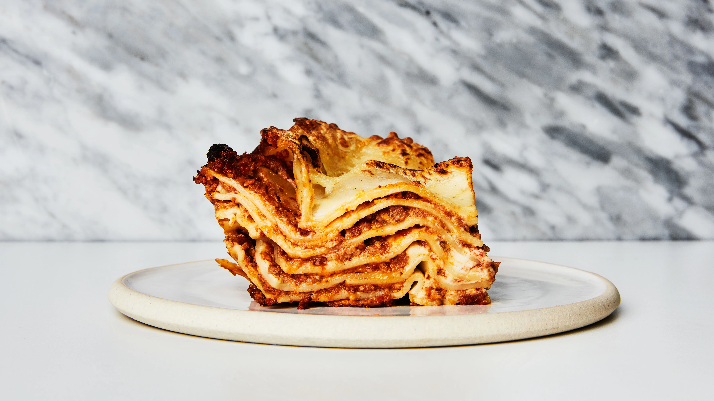

Lasagna

Description
It is usually rectangular or ribbon shaped, thicker than tagliatelle, made from a dough based on flour and eggs, with numerous local variants. After being boiled, the rectangular lasagna noodles are drained and placed in layers with a filling that varies based on different local traditions.
Ingredients
- Meat
- Onion
- Garlic and Garlic
- Tomato products
- Sugar
- Spices and Seasoning
- Lasagna noodles
- Cheeses
- Egg
Steps
- Make the meat sauce.
- Cook the noodles.
- Make the ricotta mixture.
- Layer the lasagna according to the recipe instructions.
- Cover with foil and bake.
- Let the lasagna rest before serving.